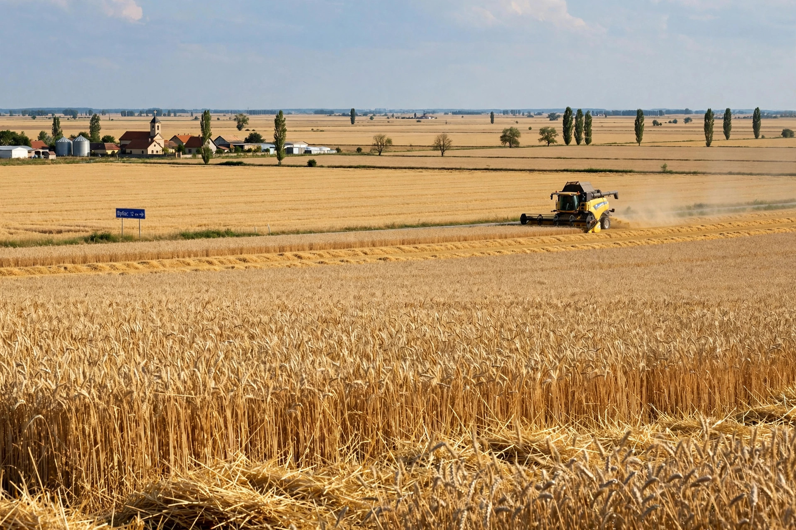

| Autonomous Province of Vojvodina | |
|---|---|
| Country | Serbia |
| Capital | Novi Sad |
| Area | 21,614 km² |
| Population | approx. 1.7 million |
Vojvodina is an autonomous province in northern Serbia, in the Pannonian Plain. It is one of Serbia's most ethnically diverse regions, with substantial Hungarian, Slovak, Croatian, Romanian, Roma and other communities alongside the Serbian majority. Its capital is Novi Sad.

The region historically included the southern marches of the medieval Kingdom of Hungary (the "Vajdaság"). After the Ottoman withdrawal it became the Habsburg Military Frontier, repopulated with Serbian settlers granted privileges in return for military service. In 1918 its representatives proclaimed union with the Kingdom of Serbia, and it became part of Yugoslavia. Vojvodina's autonomy was guaranteed under Yugoslav federal arrangements from 1945, curtailed in the late 1980s, and restored in reduced form after 2000.
Vojvodina has its own assembly, government and six officially used languages. It is divided into seven districts, including Srem, Banat and Bačka, divided by the Danube, Tisa and Sava rivers. The fertile plain is a major grain-producing region, and its economy also includes oil, machinery and food-processing industries.